Chapter 4 Linear Regression
Linear regression is a simple approach to supervised learning.
It assumes that the dependence of \(Y\) on \(X_1, X_2, \ldots, X_p\) is linear.
True regression functions are never linear!
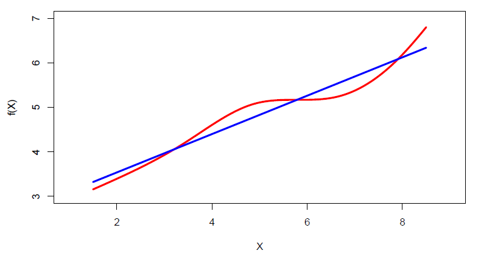
Although it may seem overly simplistic, linear regression is extremely useful both conceptually and practically.
Consider the advertising data
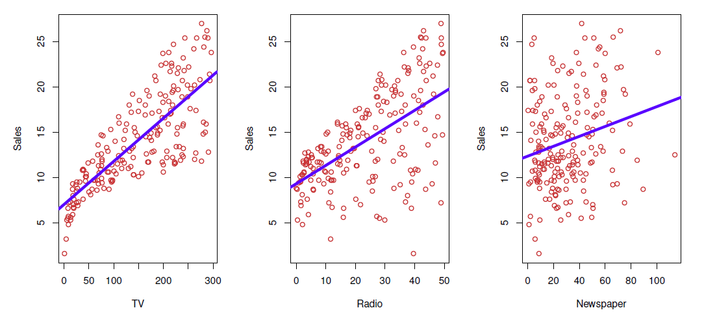
- Questions we might ask:
- Is there a relationship between advertising budget and sales?
- How strong is the relationship between advertising budget and sales?
- Which media contribute to sales?
- how accurately can we predict future sales?
- Is the relationship linear?
- Is there synergy among the advertising media?
4.1 Simple Regression
- Simple (linear) regression is defined as
\[ Y = \beta_0 + \beta_1X + \epsilon,\qquad \]
where \(Y\) and \(X\) are observed values, \(\beta_0\) and \(\beta_1\), called parameters, are the intercept (constant) term and slope coefficient, respectively, and \(\epsilon\) is an unobserved random error term.
The parameters \(\beta_0\) and \(\beta_1\) are unknown constants, and are estimated from training data.
Given some estimates \(\beta_0\) and \(\beta_1\), for the model coefficients, we predict future sales using
\[ \hat{y}=\hat{\beta}_0+\hat{\beta}_1 x \]
where \(\hat{y}\) indicates a prediction of \(Y\) on the basis of \(X=x\).
- The hat symbol denotes an estimated value.
Regression: Estimation
Let \(\hat{y}_i=\hat{\beta}_0+\hat{\beta}_1x_i\) be the prediction for \(Y\) based on the \(i\)th value of \(X\).
Then \(e_i=y_i-\hat{y}_i\) represents the \(i\)th residual.
We define the residual sum of squares (RSS) as
\[ RSS=e_1^2+e_2^2+\cdots+e_n^2 \]
or equivalently as
\[ RSS=(y_1-\hat{\beta}_0-\hat{\beta}_1x_1)^2+(y_2-\hat{\beta}_0-\hat{\beta}_1x_2)^2+\cdots +(y_n-\hat{\beta}_0-\hat{\beta}_1x_n)^2 \]
The least squares approach chooses \(\hat{\beta}_0\) and \(\hat{\beta}_1\) to minimize the RSS.
The unknown coefficients \(\beta_0\) and \(\beta_1\) are most often estimated from the training data (sample) with observations \((x_1,y_1), \ldots, (x_n,y_n)\) by the ordinary least squares (OLS), i.e,
\[ (\hat{\beta}_1,\hat{\beta}_1)=argmin_{\beta_0,\beta_1}\sum_{i=1}^n (y_i-(\beta_0+\beta_1x_i))^2 \]
- Here the solutions are
\[ \hat{\beta}_1 = \frac{\sum_{i=1}^n (x_i-\bar{x})(y_i-\bar{y})}{\sum_{i=1}^n (x_i-\bar{x})^2} \]
\[ \hat{\beta}_0=\bar{y}-\hat{\beta}_1\bar{x} \]
where \(\bar{x}=\frac{1}{n}\sum_{i=1}^n x_i\) and \(\bar{y}=\frac{1}{n}\sum_{i=1}^ny_i\) are the sample means of \(x\) and \(y\).
Remark 1
A crucial assumption for in estimation for successful estimation is
\[ E(\epsilon|x)=0 \]
which implies that the explanatory variable \(x\) and the error term \(\epsilon\) are uncorrelated.
Example 1
In the Advertising data, regressing Sales on TV budget gives
#library(ISLR2) # load ISRL
#library(help = ISLR2)
adv <- read.csv(file = "https://www.statlearning.com/s/Advertising.csv")
summary(adv)## X TV radio newspaper
## Min. : 1.00 Min. : 0.70 Min. : 0.000 Min. : 0.30
## 1st Qu.: 50.75 1st Qu.: 74.38 1st Qu.: 9.975 1st Qu.: 12.75
## Median :100.50 Median :149.75 Median :22.900 Median : 25.75
## Mean :100.50 Mean :147.04 Mean :23.264 Mean : 30.55
## 3rd Qu.:150.25 3rd Qu.:218.82 3rd Qu.:36.525 3rd Qu.: 45.10
## Max. :200.00 Max. :296.40 Max. :49.600 Max. :114.00
## sales
## Min. : 1.60
## 1st Qu.:10.38
## Median :12.90
## Mean :14.02
## 3rd Qu.:17.40
## Max. :27.00fit <- lm(sales ~ TV, data = adv) # OLS regression: sales on TV
summary(fit) # summarize regression results##
## Call:
## lm(formula = sales ~ TV, data = adv)
##
## Residuals:
## Min 1Q Median 3Q Max
## -8.3860 -1.9545 -0.1913 2.0671 7.2124
##
## Coefficients:
## Estimate Std. Error t value Pr(>|t|)
## (Intercept) 7.032594 0.457843 15.36 <2e-16 ***
## TV 0.047537 0.002691 17.67 <2e-16 ***
## ---
## Signif. codes: 0 '***' 0.001 '**' 0.01 '*' 0.05 '.' 0.1 ' ' 1
##
## Residual standard error: 3.259 on 198 degrees of freedom
## Multiple R-squared: 0.6119, Adjusted R-squared: 0.6099
## F-statistic: 312.1 on 1 and 198 DF, p-value: < 2.2e-16plot(x = adv$TV, y = adv$sales, pch = 20, xlab = "TV budget (1,000USD)",
ylab = "Sales (1,000 units)", col = "steel blue") # scatter plot
abline(fit, col = "dark gray", lwd = 3) # fitted OLS regression line
## deviations from the observed values
segments(x0 = adv$TV, y0 = predict(fit), x1 = adv$TV, y1 = adv$sales, col = "light gray")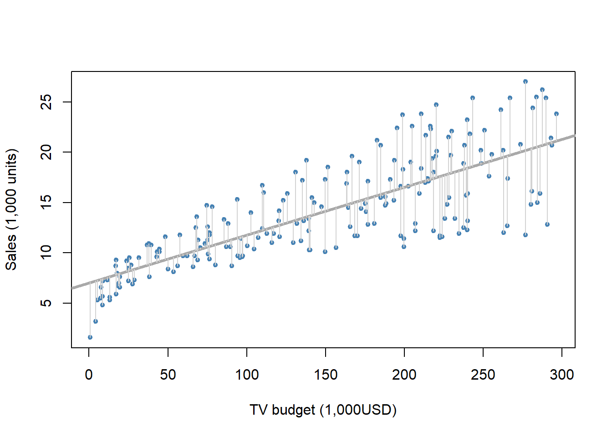
The least squares fit for the regression of sales onto TV.
In this case a linear fit captures the essence of the relationship, although it is somewhat deficient in the left of the plot.
The deviations from the regression line, \(e_i = y_i − \hat{y}_i\) are called residuals, which are estimates of the unobserved errors (\(\epsilon_i\)).
Note, \(y_i = \hat{y}_i + \epsilon_i = \hat{\beta}_0+\hat{\beta}_0 x+\epsilon_i\).
The estimators are random variables in the sense that is another sample is selected they assume different values.
The distribution of an estimator is called the sampling distribution, which is the distribution of the estimate values if one sampled \(n\) observations over and over again from the population and computed the estimates.
Example 2
Below in the left panel are the scatter plot, the population regression line, and the OLS estimated line from a sample of \(n=100\) observations, in the middle panel are OLS estimated lines from 10 samples of size \(n=100\), and in the right panel is a histogram of the slope coefficient estimates \(\hat{\beta}_1\) from 1,000 different samples of size \(n=100\).
The population model is
\[ y=2+3x+\epsilon \]
i.e., \(\beta_0=2\) and \(\beta_1=3\).
- For this simulated esample \(x\) and \(\epsilon\) are generated from \(N(0,1)\) and \(N(0,4)\) distribution, respectively.
set.seed(321) # intialize seed for exact replication
x <- rnorm(n = 100, mean = 0, sd = 1) # explanatory variable values
eps <- rnorm(n = 100, mean = 0, sd = 4) # error term
beta0 = 2; beta1 = 3 # population regression coefficients
y <- beta0 + beta1 * x + eps # realized values from the smaple of 100 observations
head(cbind(x, y)) # first few observations## x y
## [1,] 1.7049032 1.900747
## [2,] -0.7120386 -3.810928
## [3,] -0.2779849 5.699243
## [4,] -0.1196490 4.912434
## [5,] -0.1239606 -3.068909
## [6,] 0.2681838 2.450691fit <- lm(y ~ x) # OLS results
summary(fit) # results##
## Call:
## lm(formula = y ~ x)
##
## Residuals:
## Min 1Q Median 3Q Max
## -11.0051 -2.0868 -0.1227 2.4214 8.3195
##
## Coefficients:
## Estimate Std. Error t value Pr(>|t|)
## (Intercept) 1.9905 0.3663 5.434 4.03e-07 ***
## x 3.3588 0.3852 8.720 7.22e-14 ***
## ---
## Signif. codes: 0 '***' 0.001 '**' 0.01 '*' 0.05 '.' 0.1 ' ' 1
##
## Residual standard error: 3.663 on 98 degrees of freedom
## Multiple R-squared: 0.4369, Adjusted R-squared: 0.4311
## F-statistic: 76.03 on 1 and 98 DF, p-value: 7.219e-14par(mfrow = c(1, 3)) # graph window into 3 segents
plot(x, y, col = "steel blue", xlab = "x", ylab = "y", main = "Initial Sample",
font.main = 1) # scatter plot of the initial sample
legend("topleft", legend = expression(hat(beta)[0] == 1.99, hat(beta)[1] == 3.36), bty = "n")
abline(a = 2, b = 3, col = "red") # population regression line
abline(fit, col = "blue") # OLS estimated regression line
plot(x, y, type = "n", main = "Lines from 10 Samples", font.main = 1) # empty plot for simulated regression lines
for (i in 1:10) {# impose ten other sample lines
x <- rnorm(n = 100, mean = 0, sd = 1)
eps <- rnorm(n = 100, mean = 0, sd = 4)
y <- beta0 + beta1 * x + eps
abline(lm(y ~ x), col = "light blue")
}
abline(a = 2, b = 3, col = "red") # add also the population line
abline(fit, col = "blue") # add also the initial OLS estimated regression line
legend("topleft", legend = c("Population", "Initial sample", "10 simulations"),
lty = 1, col = c("red", "blue", "light blue"), bty = "n")
nsim <- 1000
hat_beta1 <- double(nsim)
for (i in 1:nsim) {## nsim samples
x <- rnorm(n = 100, mean = 0, sd = 1)
eps <- rnorm(n = 100, mean = 0, sd = 4)
y <- beta0 + beta1 * x + eps
hat_beta1[i] <- coef(lm(y ~ x))[2] # the slope coefficient
}
hist(hat_beta1,
xlab = expression(hat(beta)[1]), # expression allows for dispaying symbols and math equations
col = "light blue", prob = TRUE,
main = expression("Histogram of 1,000 " ~ beta[1] ~" Estimates")) # histogram with relative freq
curve(expr = dnorm(x, mean = mean(hat_beta1), sd = sd(hat_beta1)),
col = "red", add = TRUE) # impose normal curve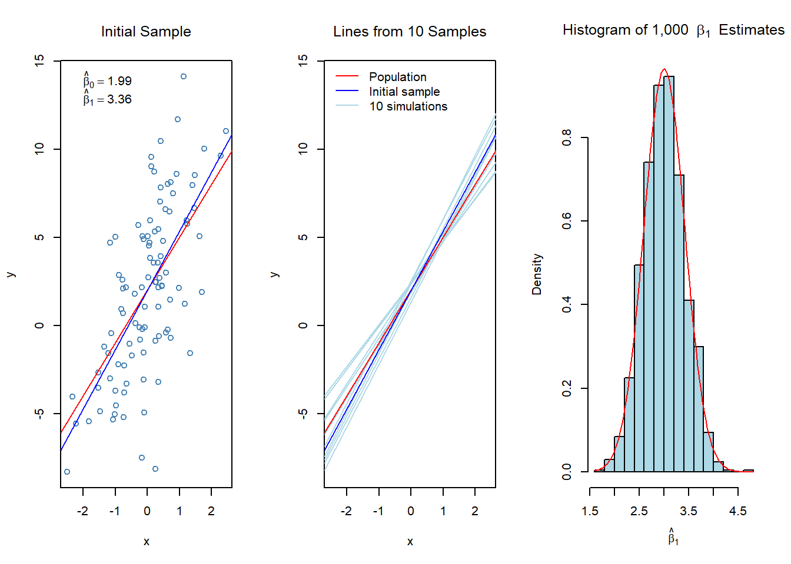
summary(fit)##
## Call:
## lm(formula = y ~ x)
##
## Residuals:
## Min 1Q Median 3Q Max
## -11.0051 -2.0868 -0.1227 2.4214 8.3195
##
## Coefficients:
## Estimate Std. Error t value Pr(>|t|)
## (Intercept) 1.9905 0.3663 5.434 4.03e-07 ***
## x 3.3588 0.3852 8.720 7.22e-14 ***
## ---
## Signif. codes: 0 '***' 0.001 '**' 0.01 '*' 0.05 '.' 0.1 ' ' 1
##
## Residual standard error: 3.663 on 98 degrees of freedom
## Multiple R-squared: 0.4369, Adjusted R-squared: 0.4311
## F-statistic: 76.03 on 1 and 98 DF, p-value: 7.219e-14sd(hat_beta1) # standard error of beta1 estimate from the repeated samples## [1] 0.4141057Regression: Accuracy of coefficients
As stated generally in equation, the true relationship between \(X\) and \(Y\) is \(Y=f(X)+\epsilon\).
Here, \(f(X)=\beta_0+\beta_1X\), resulting to the population regression \(Y=\beta_0+\beta_1X+\epsilon\).
As demonstrated by Example 2 estimates \(\hat{\beta}_0\) and \(\hat{\beta}_1\) deviate more or less from the underlying population parameters \(\beta_0\) and \(\beta_1\).
However, it can be shown that on average the estimates equal the underlying parameter value, mathematically \(E(\hat{\beta}_j)=\beta_j\), \(j=0,1\).
In such a case we say that the estimates are unbiased
So, in summary, it can be shown that OLS estimators are unbiased, i.e., they do not systematically over or under estimate the underlying parameters.
The accuracy of the estimates can be evaluated in terms of standard errors of the estimates.
\[ \hat{se}(\hat{\beta}_1)=\frac{\hat{\sigma}}{\sqrt{\Sigma_{i=1}^{n}(x_i - \bar{x})^2}} \]
\[ \hat{se}(\hat{\beta}_0)=\hat{\sigma}\bigg(\frac{1}{n} +\frac{\bar{x}}{\Sigma_{i=1}^{n}(x_i - \bar{x})^2}\bigg)^{1/2} \]
where \(\sigma^2=Var(\epsilon)\)
- These are routinely produced by every regression package.
In the above example, the initial sample produces:
summary(fit)##
## Call:
## lm(formula = y ~ x)
##
## Residuals:
## Min 1Q Median 3Q Max
## -11.0051 -2.0868 -0.1227 2.4214 8.3195
##
## Coefficients:
## Estimate Std. Error t value Pr(>|t|)
## (Intercept) 1.9905 0.3663 5.434 4.03e-07 ***
## x 3.3588 0.3852 8.720 7.22e-14 ***
## ---
## Signif. codes: 0 '***' 0.001 '**' 0.01 '*' 0.05 '.' 0.1 ' ' 1
##
## Residual standard error: 3.663 on 98 degrees of freedom
## Multiple R-squared: 0.4369, Adjusted R-squared: 0.4311
## F-statistic: 76.03 on 1 and 98 DF, p-value: 7.219e-14Thus \(\hat{se}(\hat{\beta}_1)=0.3852\), which estimates the standard error if we repeated the sampling over and over again, computed \(\hat{\beta}_1\) from each sample and calculated the standard deviation of them.
We did this 1,000 times for the right panel histogram in Example 2.
The standard deviation of these estimates is 0.4141 which is close to that of \(\hat{se}(\hat{\beta}_1)=0.3852\) (the difference is about .029, or 7%)
Confidence intervals
The standard errors can be used to compute confidence intervals (CIs) for the coefficients.
A 95% confidence interval is defined as a range of values such that with 95% probability, the range will contain the true unknown value of the parameter.
CIs are of the form
\[ \hat{\beta}\pm c_{\alpha/2}·\hat{se}\big(\hat{\beta}\big) \]
or
\[ \hat{\beta}- c_{\alpha/2}·\hat{se}\big(\hat{\beta}\big), \hat{\beta}+ c_{\alpha/2}·\hat{se}\big(\hat{\beta}\big) \]
where \(c_{\alpha/2}\) is the \(1-\alpha/2\) percentile of the \(t\)-distribution (or normal distribution).
\(\alpha\) is the significance level with typical values .05 or .01 in which cases the confidence levels are 95% and 99%, respectively.
For example, for the 95% confidence limit \(c_{0.025}\approx 2\).
In Example 2 the 95% confidence interval for \(\beta_1\) is
\[ \hat{\beta}_1 \pm 2 × \hat{se}(\hat{\beta}_1)= 3.36 ± 2 \times 0.385 = 3.36 \pm 0.770, \,\,\, or \,\,\, [2.59, 4.13]. \]
confint(fit)## 2.5 % 97.5 %
## (Intercept) 1.263579 2.717503
## x 2.594394 4.123197We observe that in this case the population \(\beta_1 = 3\) belongs to the interval.
For a 95% confidence interval there is 5% change to have such a sample that the estimate is so much off that the confidence interval does not cover the population parameter.
Hypothesis testing
Standard errors can also used in hypothesis testing.
The most common hypothesis testing involves testing the null hypothesis of
\[H_0 : There \ is \ no \ relationship \ between \ X \ and \ Y \]
versus the alternative hypothesis
\[H_1 : There \ is \ some \ relationship \ between \ x \ and \ y \]
- More formally, in terms of the regression model this corresponds to testing
\[H_0 : \beta_1 = 0\] versus \[ H_1 : \beta_1 \ne 0\]
If the null hypothesis holds then \(Y = \beta_0 + \epsilon\), so that \(X\) is not associated to \(Y\).
Testing for a more general null hypothesis of \(H_0 : \beta_1 = \beta_1^*\), where \(\beta_1^*\) is some given value, the test statistic is
\[ t= \frac{\hat{\beta}_1-\beta_1^*}{\hat{se}\big(\hat{\beta}_1\big)} \]
which for testing hypothesis with \(\beta_1^*=0\) reduces to
\[t= \frac{\beta_1}{\hat{se}\big(\hat{\beta}_1\big)}\]
The null distribution (i.e., when the null hypothesis \(H_0\) is true) of t is the Student t distribution with \(n − 2\) degrees of freedom.
With \(n > 30\) the t-distribution is close to the normal distribution.
For large absolute value of t the null hypothesis is rejected.
By a ’large’ value we mean that if the probability of obtaining such a large value is smaller then some specified threshold value \(\alpha\) , we reject the null hypothesis.
Typical values of \(\alpha\) are 0.05 or 0.05 , i.e., 5% or 1%.
The computer produces \(p-value\) that indicate the probability \(P(|t| > |t_{obs}| |H_0)\) , i.e., the probability for getting as large (or larger) values than the one observed, \(t_{obs}\) , if the null hypothesis is holds.
If the probability is too low, we infer that rather than having so extreme sample, the underlying parameter value is something else than that of the null hypothesis, and therefore reject the \(H_0\) .
Typical threshold values are 0.05 ( statistically significant at the 5% level) and 0.01 ( statistically significant at the 1% level), i.e., if the \(p\)-value goes below these values, we reject the null hypothesis at the associated level of significance.
Example 3
In the advertising example in p-value < .0001 (in fact the first 15 decimals are zeros), so the data suggest strongly to reject the null hypothesis that TV advertising does not affect Sales (the sign of the coefficient show that the association is positive, as could be expected).
The quality of a linear regression fit is typically assessed by the residual standard error (RSE) and coefficient of determination \(R^2\) (R-square) of which the R-square more popular.
\[RSE =\sqrt{\frac{1}{n-2}RSS} = \sqrt{\frac{1}{n-2} \sum_{i=1}^n (y_i -\hat{y}_i)^2 }\]
and
\[ R^2 = \frac{TSS-RSS} {TSS} = 1-\frac{RSS}{TSS} \]
where \(TSS = \Sigma_{i=1}^n(y_i - \bar{y})^2\) is the total sum of squares and \(RSS = \Sigma_{i=1}^n(y_i - \hat{y}_i)^2\) is the residual sum-of-squares.
- We observe that \(RSE = \sqrt{RSS/(n-2)}\)
It can be shown that in this simple linear regression setting that \(R^2=r^2\), where \(r\) is the correlation between \(X\) and \(Y\):
\[ r=\frac{\sum_{i=1}^n(x_i-\bar{x})(y_i-\bar{y})}{\sqrt{\sum_{i=1}^n(x_i-\bar{x})^2}\sqrt{\sum_{i=1}^n(y_i-\bar{y})^2}} \]
R-square is a goodness-of-fit measure with \(0 \le R^2\le 1\) ( \(R^2 = 0\) , no association, \(R^2 = 1\) perfect fit), while RSE measures lack of fit.
Both of these are routinely produced by regression packages.
In the advertising example (rounded to two decimals) \(RSE = 3.26\) and \(R^2 = 0.61\).
adv <- read.csv(file = "https://www.statlearning.com/s/Advertising.csv")
fit <- lm(sales ~ TV, data = adv) # OLS regression: sales on TV
summary(fit)##
## Call:
## lm(formula = sales ~ TV, data = adv)
##
## Residuals:
## Min 1Q Median 3Q Max
## -8.3860 -1.9545 -0.1913 2.0671 7.2124
##
## Coefficients:
## Estimate Std. Error t value Pr(>|t|)
## (Intercept) 7.032594 0.457843 15.36 <2e-16 ***
## TV 0.047537 0.002691 17.67 <2e-16 ***
## ---
## Signif. codes: 0 '***' 0.001 '**' 0.01 '*' 0.05 '.' 0.1 ' ' 1
##
## Residual standard error: 3.259 on 198 degrees of freedom
## Multiple R-squared: 0.6119, Adjusted R-squared: 0.6099
## F-statistic: 312.1 on 1 and 198 DF, p-value: < 2.2e-16RSE is in the same units as the dependent variable \(y\).
James et al. interpret RSE as the amount the prediction is on average off from the true value of the dependent variable.
Accordingly, \(RES = 3.26\) would indicate that any sales on the basis of TV would be off on average 3.26 thousand units.
Thus, as the average sales over all markets is approximately 14 thousand units, the error is 3.26 / 14 = 23%.
4.2 Multiple Regression
- Adding explanatory variables ( \(X\)-variables) to the model gives multiple regression
\[Y = β_0 + β_1X_1 + · · · + β_pX_p + ϵ\]
where \(X_j\) is the \(j\) th predictor (explanatory variable) and \(β_j\) quantifies the marginal effect or association between \(Y\) and \(X_j\) .
That is, \(β_j\) indicates the unit change in \(x_j\) holding all other predictors fixed.
We interpret \(\beta_j\) as the average effect on \(Y\) of a one unit increase in \(X_j\), holding all other predictors fixed.
The coefficients are again estimated by finding \(\hat{\beta}_0, \hat{\beta}_1, . . . , \hat{\beta}_p\) that minimize the sum of squares \(\Sigma_{i=1}^n (y_i - \hat{y}_i)^2\), where \(\hat{y}_i = \hat{\beta}_0 + \hat{\beta}_1x_{i1} +. . . +\hat{\beta}_px_{ip}\).
Interpreting regression coefficients
The ideal scenario is when the predictors are uncorrelated - a balanced design:
- Each coefficient can be estimate and tested separately.
- Interpretations such as “a unit change in \(X_j\) is associated with a \(\beta_j\) change in \(Y\), while all the other variables stay fixed”, are possible.
Correlations among predictors cause problems:
- The variance of all coefficients tends to increase, sometimes dramatically
- Interpretations become hazardous - when \(X_j\) changes, everything else changes.
Claims of causality should be avoided for observational data.
“Data Analysis and Regression” Mosteller and Tukey 1977
- A regression coefficient \(\beta_j\) estimates the expected change in \(Y\) per unit change in \(X_j\), with all other predictors held fixed. But predictors usually change together!
- Example: \(Y\) total amount of change in your pocket; \(X_1\)= # of coins; \(X_2\)= # of pennies, nickels and dimes. By itself, regression coefficient of \(Y\) on \(X_2\) will be \(>0\). But how about with \(X_1\) in model?
- \(Y\)= number of tackles by a football player in a season; \(W\) and \(H\) are his weight and height. Fitted regression model is \(\hat{Y}=b_0+0.50W-0.10H\). How do we interpret \(\hat{\beta}_2<0\)?
“Essentially, all models are wrong, but some are useful” - George Box
“The only way to find out what will happen when a complex system is disturbed is to disturb the system, not merely to observe it passively” - Fred Mosteller and John Tukey, paraphrasing George Box
Estimation and Prediction for Multiple Regression
- Given estimates \(\hat{\beta}_0,\hat{\beta}_1, \ldots, \hat{\beta}_p\), we can make predictions using the formula
\[ \hat{y}=\hat{\beta}_0+\hat{\beta}_1x_1+ \cdots + \hat{\beta}_px_p \]
- We estimate \(\beta_0,\beta_1,\ldots, \beta_p\) as the values that minimize the sum of squared residuals
\[ \begin{aligned} RSS &= \sum_{i=1}^n (y_i-\hat{y}_i)^2 \\ &= \sum_{i=1}^n (y_i-\hat{\beta}_0 - \hat{\beta}_1x_{i1}-\hat{\beta}_2x_{i2}-\cdots -\hat{\beta}_px_{ip})^2 \end{aligned} \]
- This is done using standard statistical software. The values \(\hat{\beta}_0,\hat{\beta}_1, \ldots, \hat{\beta}_p\) that minimize \(RSS\) are the multiple least squares regression coefficient estimates.
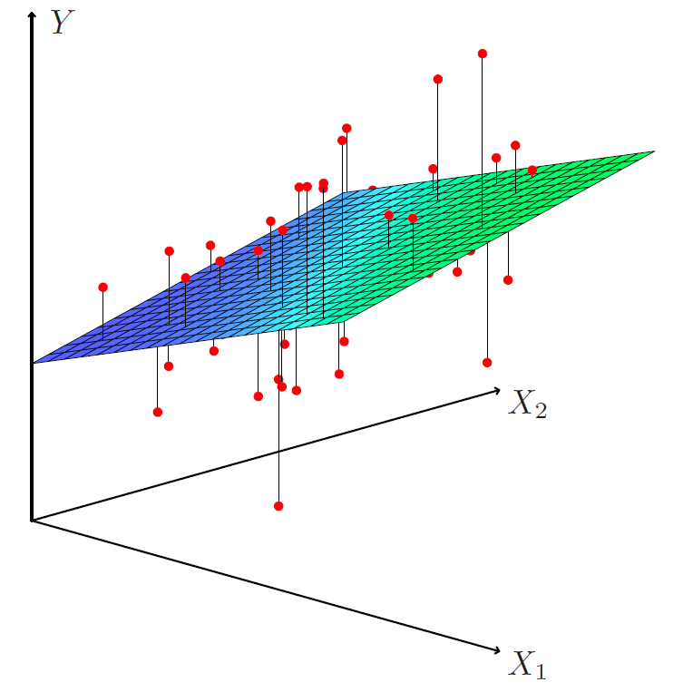
- Results for advertising data
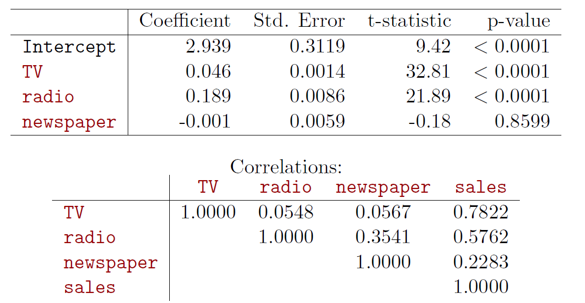
Example 4
- In the advertising example let us enhance the model as
\[sales = \beta_0 + \beta_1TV + \beta_2radio + \beta_3newspaper + \epsilon \]
#library(car) # load car package
#adv <- read.csv(file = "https://www.statlearning.com/s/Advertising.csv")
adv <- url("https://elflini.github.io/study/statlearn/Advertising.rda")
load(file=adv)
summary(adv)## X TV radio newspaper
## Min. : 1.00 Min. : 0.70 Min. : 0.000 Min. : 0.30
## 1st Qu.: 50.75 1st Qu.: 74.38 1st Qu.: 9.975 1st Qu.: 12.75
## Median :100.50 Median :149.75 Median :22.900 Median : 25.75
## Mean :100.50 Mean :147.04 Mean :23.264 Mean : 30.55
## 3rd Qu.:150.25 3rd Qu.:218.82 3rd Qu.:36.525 3rd Qu.: 45.10
## Max. :200.00 Max. :296.40 Max. :49.600 Max. :114.00
## sales
## Min. : 1.60
## 1st Qu.:10.38
## Median :12.90
## Mean :14.02
## 3rd Qu.:17.40
## Max. :27.00head(adv) # a few first lines of the Advertising data loaded into object adv## X TV radio newspaper sales
## 1 1 230.1 37.8 69.2 22.1
## 2 2 44.5 39.3 45.1 10.4
## 3 3 17.2 45.9 69.3 9.3
## 4 4 151.5 41.3 58.5 18.5
## 5 5 180.8 10.8 58.4 12.9
## 6 6 8.7 48.9 75.0 7.2tail(adv) # a few last lines## X TV radio newspaper sales
## 195 195 149.7 35.6 6.0 17.3
## 196 196 38.2 3.7 13.8 7.6
## 197 197 94.2 4.9 8.1 9.7
## 198 198 177.0 9.3 6.4 12.8
## 199 199 283.6 42.0 66.2 25.5
## 200 200 232.1 8.6 8.7 13.4cor(subset(adv,select=-X))## TV radio newspaper sales
## TV 1.00000000 0.05480866 0.05664787 0.7822244
## radio 0.05480866 1.00000000 0.35410375 0.5762226
## newspaper 0.05664787 0.35410375 1.00000000 0.2282990
## sales 0.78222442 0.57622257 0.22829903 1.0000000pairs(subset(adv,select=-X),cex=0.5, col="red")
fit1 <- lm(sales ~ TV + radio + newspaper, data = adv) # fit the regression, results saved in object fit
summary(fit1) # show results##
## Call:
## lm(formula = sales ~ TV + radio + newspaper, data = adv)
##
## Residuals:
## Min 1Q Median 3Q Max
## -8.8277 -0.8908 0.2418 1.1893 2.8292
##
## Coefficients:
## Estimate Std. Error t value Pr(>|t|)
## (Intercept) 2.938889 0.311908 9.422 <2e-16 ***
## TV 0.045765 0.001395 32.809 <2e-16 ***
## radio 0.188530 0.008611 21.893 <2e-16 ***
## newspaper -0.001037 0.005871 -0.177 0.86
## ---
## Signif. codes: 0 '***' 0.001 '**' 0.01 '*' 0.05 '.' 0.1 ' ' 1
##
## Residual standard error: 1.686 on 196 degrees of freedom
## Multiple R-squared: 0.8972, Adjusted R-squared: 0.8956
## F-statistic: 570.3 on 3 and 196 DF, p-value: < 2.2e-16The results indicate that newspapers do not contribute sales, while an additional thousand spent in TV advertising predicts an average increase in sales by about 46 units (holding radio budget unchanged).
Similarly an additional thousand in radio advertising predicts increase in sales by about 189 units (holding TV budget intact).
However, checking out the residuals reveals that the specification is not satisfactory.
plot(fit1, which = 1)
The graph indicates non-linearity.
After dropping the non-significant newspaper, we add squared terms of the explanatory variables to account for the obvious non-linearity.
\[sales = \beta_0 + \beta_1TV + \beta_2radio + \beta_{11}(TV)^2 + \beta_{22}(radio)^2 + \epsilon \]
(Note: \(β\) s and \(\epsilon\) are generic notations).
summary(fit1b <- lm(sales ~ TV + radio + I(TV^2) + I(radio^2), data = adv)) # quadratic terms after removing newspaper##
## Call:
## lm(formula = sales ~ TV + radio + I(TV^2) + I(radio^2), data = adv)
##
## Residuals:
## Min 1Q Median 3Q Max
## -7.3987 -0.8509 0.0376 0.9781 3.3727
##
## Coefficients:
## Estimate Std. Error t value Pr(>|t|)
## (Intercept) 1.535e+00 4.093e-01 3.750 0.000233 ***
## TV 7.852e-02 4.978e-03 15.774 < 2e-16 ***
## radio 1.588e-01 2.830e-02 5.613 6.78e-08 ***
## I(TV^2) -1.138e-04 1.674e-05 -6.799 1.26e-10 ***
## I(radio^2) 7.135e-04 5.709e-04 1.250 0.212862
## ---
## Signif. codes: 0 '***' 0.001 '**' 0.01 '*' 0.05 '.' 0.1 ' ' 1
##
## Residual standard error: 1.515 on 195 degrees of freedom
## Multiple R-squared: 0.9174, Adjusted R-squared: 0.9157
## F-statistic: 541.2 on 4 and 195 DF, p-value: < 2.2e-16## note: expression of the form y ~ x + z is R formula, see help(I) to see the meaning of I() function
par(mfrow = c(2, 2)) # split plot window in 4 quadrants
plot(fit1b, which = c(1, 2))
plot(x = adv$TV, y = resid(fit1b), ylim = c(-5, 5), col = "steel blue", xlab = "TV", ylab = "Residuals", main = "Residuals vs TV adrvertising",
cex.main = 1, font.main = 1)
lines(lowess(resid(fit1b) ~ adv$TV, f = .5), col = "red")
plot(x = adv$radio, y = resid(fit1b), col = "steel blue", ylim = c(-5, 5), xlab = "Radio", ylab = "Residuals", main = "Residuals vs Radio adrvertising",
cex.main = 1, font.main = 1)
lines(lowess(resid(fit1b) ~ adv$radio, f = .5), col = "red")
The residual plot (top left) indicate still non-linearity.
Let us yet enhance the model by adding the interaction term TV × radio of the explanatory variables and estimate regression
\[sales = \beta_0 + \beta_1TV + \beta_2radio + \beta_{11}(TV)^2 + \beta_{22}(radio)^2 + \beta_{12}(TV \times radio) + ϵ \qquad (23)\]
summary(fit1c <- lm(sales ~ TV + radio + I(TV^2) + I(radio^2) + TV:radio,
data = adv)) # quadratic terms after dropping newspaper##
## Call:
## lm(formula = sales ~ TV + radio + I(TV^2) + I(radio^2) + TV:radio,
## data = adv)
##
## Residuals:
## Min 1Q Median 3Q Max
## -5.0027 -0.2859 -0.0062 0.3829 1.2100
##
## Coefficients:
## Estimate Std. Error t value Pr(>|t|)
## (Intercept) 5.194e+00 2.061e-01 25.202 <2e-16 ***
## TV 5.099e-02 2.236e-03 22.801 <2e-16 ***
## radio 2.654e-02 1.242e-02 2.136 0.0339 *
## I(TV^2) -1.098e-04 6.901e-06 -15.914 <2e-16 ***
## I(radio^2) 1.861e-04 2.359e-04 0.789 0.4311
## TV:radio 1.075e-03 3.479e-05 30.892 <2e-16 ***
## ---
## Signif. codes: 0 '***' 0.001 '**' 0.01 '*' 0.05 '.' 0.1 ' ' 1
##
## Residual standard error: 0.6244 on 194 degrees of freedom
## Multiple R-squared: 0.986, Adjusted R-squared: 0.9857
## F-statistic: 2740 on 5 and 194 DF, p-value: < 2.2e-16cor(cbind(radio=adv$radio, TV=adv$TV, radioTV=adv$radio * adv$TV))## radio TV radioTV
## radio 1.00000000 0.05480866 0.6813916
## TV 0.05480866 1.00000000 0.6621602
## radioTV 0.68139157 0.66216021 1.0000000par(mfrow = c(2, 2))
plot(fit1c, which = c(1, 2))
plot(x = adv$TV, y = resid(fit1c), col = "steel blue", ylim = c(-5, 5), xlab = "TV", ylab = "Residuals", main = "Residuals vs TV adrvertising",
cex.main = 1, font.main = 1)
lines(lowess(resid(fit1c) ~ adv$TV, f = .5), col = "red")
plot(x = adv$radio, y = resid(fit1c), col = "steel blue", ylim = c(-5, 5), xlab = "Radio", ylab = "Residuals", main = "Residuals vs Radio adrvertising",
cex.main = 1, font.main = 1)
lines(lowess(resid(fit1c) ~ adv$radio, f = .5), col = "red")
Except of two potential outliers (obs 131 and 156), the residual plots are more satisfactory (recall error term should be purely random, thereby showing any systematic patterns in any context).
Some indication of third order effect of TV may be present.
The interpretation of coefficients is now a bit more tricky.
For example the TV coefficient 0.051 indicates TV effect at zero radio budget (an increase of $1,000 TV advertising can be expected to increases sales by 51 units if radio advertising is zero), while generally the marginal effect depends on the current levels of TV and radio advertising, being of the form
\[ \hat{\beta}_1+\hat{\beta}_{11}TV^2 + \hat{\beta}_{12}radio \]
- Finally, it may be surprising that newspaper advertising does not contribute sales in the model because alone it is significant in a simple regression.
summary(fit1d <- lm(log(sales) ~ TV + radio + I(TV^2) + I(radio^2) + TV:radio,
data = adv[-c(131, 156), ])) # quadratic term##
## Call:
## lm(formula = log(sales) ~ TV + radio + I(TV^2) + I(radio^2) +
## TV:radio, data = adv[-c(131, 156), ])
##
## Residuals:
## Min 1Q Median 3Q Max
## -0.312665 -0.032455 -0.006775 0.045860 0.121585
##
## Coefficients:
## Estimate Std. Error t value Pr(>|t|)
## (Intercept) 1.685e+00 2.236e-02 75.321 < 2e-16 ***
## TV 6.661e-03 2.440e-04 27.297 < 2e-16 ***
## radio 1.071e-02 1.325e-03 8.083 6.91e-14 ***
## I(TV^2) -1.462e-05 7.496e-07 -19.506 < 2e-16 ***
## I(radio^2) -7.432e-05 2.512e-05 -2.958 0.00348 **
## TV:radio 4.061e-05 3.752e-06 10.823 < 2e-16 ***
## ---
## Signif. codes: 0 '***' 0.001 '**' 0.01 '*' 0.05 '.' 0.1 ' ' 1
##
## Residual standard error: 0.06645 on 192 degrees of freedom
## Multiple R-squared: 0.9695, Adjusted R-squared: 0.9687
## F-statistic: 1219 on 5 and 192 DF, p-value: < 2.2e-16The reason is that radio and newspaper are correlated.
So, newspaper alone in a regression reflects the radio advertising (due to the correlation) even though newspaper advertising actually does not contribute sales!
A 3D plot to illustrate graphically the relationships.

Some important questions
- Is at least one of the predictors \(x_1, x_2, . . . , x_p\) useful in predicting the response?
- Do all predictors help to explain \(y\) , or is only a subset of the predictors useful?
- How well does the model fit the data?
- Given a set of predictor values, what response value should we predict, and how accurate is our prediction?
4.2.1 Importance of predictors: Statistical significance of coefficients
- The \(t\)-statistics
\[t = \frac{\hat{\beta}_j}{\hat{se}\big(\hat{\beta}_j\big)}\]
and associated \(p\)-values indicate significance of individual coefficients separately.
- Testing joint significance of all (or a subset of) coefficients, i.e., null hypothesis
\[H_0~: \beta_1 = · · · = \beta_p = 0\]
versus
\[H_1: at \ least \ one \ \beta_j \ne 0\]
can be performed by the \(F\)-statistic
\[F = \frac{(TSS − RSS)/p}{RSS/(n − p − 1)} \sim F_{p,n-p-1}\]
which has the \(F\)-distribution with \(p\) and \(n − p − 1\) degrees of freedom if the null hypothesis \(H_0\) is true.
Example 5
In Example 4, \(F = 260.9\) with degrees of freedom 3 and 169 the \(p\) -value zero in 15 decimal places, implying strong rejection of the null hypothesis that advertising in the three media does not affect sales (i.e., the null hypothesis \(H_0 : \beta_1 = \beta_2 = \beta_3 = 0\) ).
The \(F\)-test for testing hypothesis can be consider as the first step.
If the null hypothesis is not rejected, we conclude that no explanatory variable is associated to \(Y\) and the model is of the form \(Y = \beta_0 + ϵ\) , i.e., \(Y\) purely varies around its mean.
If the null hypothesis is rejected then the interest is which variables are associated with \(Y\) , i.e., which explanatory variables are important.
Above we tested the importance of all variables.
This can be generalized to test the importance of a particular subset \(q\) variables (assume that they are the \(q\) last ones).
This corresponds to a null hypothesis
\[H_0 : \beta_{p−q+1} = \beta_{p−q+2} = · · · = \beta_p = 0\]
The alternative hypothesis is again that at least one of those coefficients is non-zero.
The test statistic is
\[F = \frac{(RSS_0 − RSS)/q}{RSS/(n − p − 1)}\]
where \(RSS_0\) is the residual sum of squares of the regression with \(q\) explanatory variables, i.e. of the fit of regression
\[y = \beta_0 + \beta_1x_1 + · · · + \beta_qx_q + ϵ\]
4.2.2 Selecting important variables
The most direct approach is called all subsets or best subset regression: we compute the least squares fit for all possible subsets and then choose between them based on some criterion that balances training error with model size.
However we often can’t examine all possible models, since they are \(2^p\) of them; for example when \(p=40\) there are over a billion models!
Instead we need an automated approach that searches through a subset of them.
From a set of \(p\) explanatory variables all are not necessarily associated to \(Y\) or their importance is marginal.
Variable selection or model selection in regression analysis refers to the problem to choosing the best subset of variables from available (large number of) candidates.
- Criterion functions:
- Mellow’s \(C_p\)
- Akaike information criterion (AIC)
- Bayesian information criterion (BIC)
- Ajdusted $R2
- Cross-validation (CV)
- Forward selection
- start from the null model - a model that contains an intercept but no predictors.
- Fit \(p\) simple linear regressions and ad to the null model the variable that results in the lowest RSS
- Add to that model the variable that results in the lowest RSS amongst all two-variable models.
- Continue until some stopping rule is satisfied, for example when all remaining variables have a \(p\)-value above some threshold.
- Backward selection
- Start with all variables in the model.
- Remove the variable with the largest \(p\)-value - that is, the variable that is the least statistically significant.
- The new (\(p-1\))-variable model is fit, and the variable with the largest \(p\)-value is removed.
- Continue until a stopping rule is reached. For instance, we may stop when all remaining variables have a significant \(p\)-value defined by some sifnificance threshold.
- Forward-backward selection (step-wise)
- This is a combination of forward and backward selection by starting with the forward selection.
- And applying backward selection at each step to remove non-significant variables from the current model.
- The procedure is stopped when no more variables are selected and no variables are removed.
- Criterion functions:
Remark 2
- The step-wise selections can be also performed using criterion functions like AIC.
- For example R package car has AIC step wise option.
Example 6
- AIC step wise variable selection.
library(car) ## 필요한 패키지를 로딩중입니다: carDataboston <- MASS::Boston
options(digits = 3, scipen = 3)
print(summary(fit_lm <- lm(medv ~ ., data = boston)), digits = 2) ##
## Call:
## lm(formula = medv ~ ., data = boston)
##
## Residuals:
## Min 1Q Median 3Q Max
## -15.59 -2.73 -0.52 1.78 26.20
##
## Coefficients:
## Estimate Std. Error t value Pr(>|t|)
## (Intercept) 36.45949 5.10346 7.1 3e-12 ***
## crim -0.10801 0.03286 -3.3 0.001 **
## zn 0.04642 0.01373 3.4 8e-04 ***
## indus 0.02056 0.06150 0.3 0.738
## chas 2.68673 0.86158 3.1 0.002 **
## nox -17.76661 3.81974 -4.7 4e-06 ***
## rm 3.80987 0.41793 9.1 <2e-16 ***
## age 0.00069 0.01321 0.1 0.958
## dis -1.47557 0.19945 -7.4 6e-13 ***
## rad 0.30605 0.06635 4.6 5e-06 ***
## tax -0.01233 0.00376 -3.3 0.001 **
## ptratio -0.95275 0.13083 -7.3 1e-12 ***
## black 0.00931 0.00269 3.5 6e-04 ***
## lstat -0.52476 0.05072 -10.3 <2e-16 ***
## ---
## Signif. codes: 0 '***' 0.001 '**' 0.01 '*' 0.05 '.' 0.1 ' ' 1
##
## Residual standard error: 4.7 on 492 degrees of freedom
## Multiple R-squared: 0.74, Adjusted R-squared: 0.73
## F-statistic: 1.1e+02 on 13 and 492 DF, p-value: <2e-16stw <- MASS::stepAIC(fit_lm, direction = "both", trace = FALSE)
summary(stw) # model select by stepwise AIC##
## Call:
## lm(formula = medv ~ crim + zn + chas + nox + rm + dis + rad +
## tax + ptratio + black + lstat, data = boston)
##
## Residuals:
## Min 1Q Median 3Q Max
## -15.598 -2.739 -0.505 1.727 26.237
##
## Coefficients:
## Estimate Std. Error t value Pr(>|t|)
## (Intercept) 36.34115 5.06749 7.17 2.7e-12 ***
## crim -0.10841 0.03278 -3.31 0.00101 **
## zn 0.04584 0.01352 3.39 0.00075 ***
## chas 2.71872 0.85424 3.18 0.00155 **
## nox -17.37602 3.53524 -4.92 1.2e-06 ***
## rm 3.80158 0.40632 9.36 < 2e-16 ***
## dis -1.49271 0.18573 -8.04 6.8e-15 ***
## rad 0.29961 0.06340 4.73 3.0e-06 ***
## tax -0.01178 0.00337 -3.49 0.00052 ***
## ptratio -0.94652 0.12907 -7.33 9.2e-13 ***
## black 0.00929 0.00267 3.47 0.00056 ***
## lstat -0.52255 0.04742 -11.02 < 2e-16 ***
## ---
## Signif. codes: 0 '***' 0.001 '**' 0.01 '*' 0.05 '.' 0.1 ' ' 1
##
## Residual standard error: 4.74 on 494 degrees of freedom
## Multiple R-squared: 0.741, Adjusted R-squared: 0.735
## F-statistic: 128 on 11 and 494 DF, p-value: <2e-16## log(medv)
print(summary(fit_lm2 <- lm(log(medv) ~ ., data = boston)), digits = 2) # regress log(medv) on all variables##
## Call:
## lm(formula = log(medv) ~ ., data = boston)
##
## Residuals:
## Min 1Q Median 3Q Max
## -0.734 -0.097 -0.017 0.096 0.864
##
## Coefficients:
## Estimate Std. Error t value Pr(>|t|)
## (Intercept) 4.10204 0.20427 20.1 <2e-16 ***
## crim -0.01027 0.00132 -7.8 4e-14 ***
## zn 0.00117 0.00055 2.1 0.033 *
## indus 0.00247 0.00246 1.0 0.317
## chas 0.10089 0.03449 2.9 0.004 **
## nox -0.77840 0.15289 -5.1 5e-07 ***
## rm 0.09083 0.01673 5.4 9e-08 ***
## age 0.00021 0.00053 0.4 0.691
## dis -0.04909 0.00798 -6.1 2e-09 ***
## rad 0.01427 0.00266 5.4 1e-07 ***
## tax -0.00063 0.00015 -4.2 4e-05 ***
## ptratio -0.03827 0.00524 -7.3 1e-12 ***
## black 0.00041 0.00011 3.8 1e-04 ***
## lstat -0.02904 0.00203 -14.3 <2e-16 ***
## ---
## Signif. codes: 0 '***' 0.001 '**' 0.01 '*' 0.05 '.' 0.1 ' ' 1
##
## Residual standard error: 0.19 on 492 degrees of freedom
## Multiple R-squared: 0.79, Adjusted R-squared: 0.78
## F-statistic: 1.4e+02 on 13 and 492 DF, p-value: <2e-16stw2 <- MASS::stepAIC(fit_lm2, direction = "both", trace = FALSE) # forward-backward, no intermadiate results
summary(stw2)##
## Call:
## lm(formula = log(medv) ~ crim + zn + chas + nox + rm + dis +
## rad + tax + ptratio + black + lstat, data = boston)
##
## Residuals:
## Min 1Q Median 3Q Max
## -0.7340 -0.0946 -0.0177 0.0978 0.8629
##
## Coefficients:
## Estimate Std. Error t value Pr(>|t|)
## (Intercept) 4.083682 0.203049 20.11 < 2e-16 ***
## crim -0.010319 0.001313 -7.86 2.5e-14 ***
## zn 0.001087 0.000542 2.01 0.04531 *
## chas 0.105148 0.034228 3.07 0.00224 **
## nox -0.721744 0.141653 -5.10 5.0e-07 ***
## rm 0.090673 0.016281 5.57 4.2e-08 ***
## dis -0.051706 0.007442 -6.95 1.2e-11 ***
## rad 0.013446 0.002540 5.29 1.8e-07 ***
## tax -0.000558 0.000135 -4.13 4.3e-05 ***
## ptratio -0.037426 0.005172 -7.24 1.8e-12 ***
## black 0.000413 0.000107 3.85 0.00013 ***
## lstat -0.028604 0.001900 -15.05 < 2e-16 ***
## ---
## Signif. codes: 0 '***' 0.001 '**' 0.01 '*' 0.05 '.' 0.1 ' ' 1
##
## Residual standard error: 0.19 on 494 degrees of freedom
## Multiple R-squared: 0.789, Adjusted R-squared: 0.784
## F-statistic: 168 on 11 and 494 DF, p-value: <2e-16- indus and age become removed.
4.2.3 Model fit
Similar to simple regression \(R^2\) and residual standard error (RSE) are two of the most common model fit measures.
In Example 4: \(R^2 = 0.986\) , i.e., the model explains 98.6% of the total variation in sales.
Another R-squared is \[ \bar{R^2}= 1-\frac{RSS/(n-p-1)}{TSS/(n − 1)}=1-(1-R^2)\frac{n-1}{n-p-1}\]
called the adjusted R-squared which penalizes the \(R^2\) by inclusion of additional explanatory variables.
In Example 6: \(R^2 = 0.741\) for the full model and 0.7406 for the stepwise selected model (indus and age removed), while \(\bar{R^2} = 0.734\) for the full model and \(\bar{R^2} = 0.735\) for the reduced model.
Thus, R-squared (slightly) decreases when removing explanatory variables, while in this case the adjusted R-squared slightly increases.
4.2.4 Prediction
- The estimated model
\[\hat{y} = \hat{\beta}_0+\hat{\beta}_{1}x_1+ · · ·+\hat{\beta}_px_p\] estimates the population regression
\[f(X) = \beta_0+\beta_1X_1+ · · ·+\beta_pX_p\]
The inaccuracy in the estimated coefficients is related to the reducible error.
Confidence interval for regression : Confidence interval of the population regression in (31) is
\[\hat{y} ± c_{\alpha/2} \hat{se}(\hat{y}) \]
where
\[\hat{se}(\hat{y}) = \hat{\sigma}\sqrt{x'(\boldsymbol x'\boldsymbol x)^{-1}x}\]
is the standard error of the regression line (more precisely hyper plane).
- Confidence interval for prediction : Confidence interval for a realized value \(y\) related to a given \(x\) observed values is given by
\[\hat{y} ± c_{\alpha/2} \hat{se}(pred \, y)\]
where
\[\hat{se}(pred \, y) = \hat{\sigma}\sqrt{1+x'(\boldsymbol x'\boldsymbol x)^{-1}x}\]
- The one in the standard error of prediction is due to the irreducible error.
Example 7
- In the Advertising data set consider regression \(sales = \beta_0 + \beta_1TV + \beta_{11}(TV)^2 + \epsilon\).
- The figure depicts 95% confidence for the regression line (grey) and predictions (light blue).
## regression of advertising on TV and TV squared
a <- summary(fit <- lm(sales ~ TV + I(TV^2), data = adv)) # save summary resutls to object a and lm results to object fit
## lower 95% limit for the regression line
x <- seq(from = min(adv$TV), to = max(adv$TV), length = 200) # generate ordered values for prediction
xx <- data.frame(TV = x) # values for the prediction equation
#head(xx)
## confidence interval for regression
pred <- predict(fit, newdata = xx, interval = "confidence") # default ci is 95%
## confidence interval for prediction
pred2 <- predict(fit, newdata = xx, interval = "prediction")
#str(pred)
plot(sales ~ TV, data = adv, type = "n") # co-ordinate axes
## use polygon function to create shaded confidence bounds
polygon(x = c(x, rev(x)), y = c(pred2[, "upr"], rev(pred2[, "lwr"])),
col = "light blue", border = NA) # confidence interval for prediction
polygon(x = c(x, rev(x)), y = c(pred[, "upr"], rev(pred[, "lwr"])), col = "light gray", border = NA) # confidence interval for regression line
lines(x = x, y = pred[, "fit"], col = "red") # fitted regression line
points(formula = sales ~ TV, data = adv, col = "steel blue") # add observations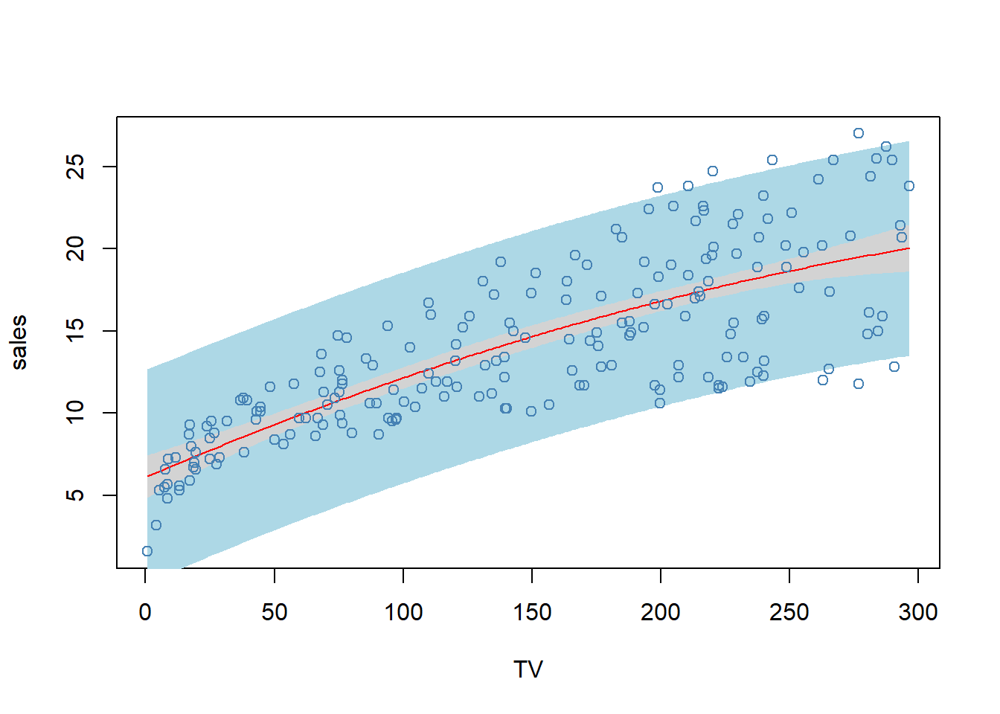
4.3 Other consideration
4.3.1 Qualitative predictors
Some predictors are not quantitative but are qualitative, taking a discrete set of values.
These are also called categorical predictors or factor variable.
Example - Credit data (ISLR package)
library(ISLR2)
pairs(subset(ISLR::Credit,select=c("Balance","Age","Cards","Education","Income","Limit","Rating")),cex=0.4, col="blue")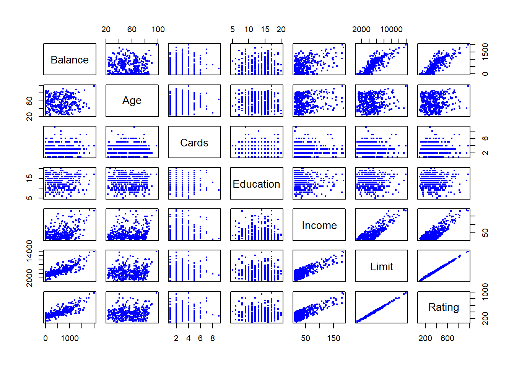
In addition to the 7 quantitative variables shown, there are four qualitative variables: gender, student (student status), status (marital status), and ethnicity (Caucasian, African American (AA) or Asian)
Qualitative information that indicate only classification information (e.g. gender, ethnic group, etc) can be introduced into the regression using indicator or dummy variables.
In regression for a qualitative explanatory variables with \(q\) classes, one is selected as the reference class and the other \(q-1\) classes are indicated by \(q-1\) dummy variables.
The coefficients of the dummy variable indicate the deviation from the base group.
In R category variables can be defined as factor variables, for which R generates the needed dummy variables in the regression.
Example: investigate differences in credit card balance between makes and females, ignoring the other variables.
We create a new variable
\[ x_i=\begin{cases} 1, \,\,\, if \,\,\, ith \,\,\, person \,\,\, is \,\,\, female \\ 0, \,\,\, if \,\,\, ith \,\,\, person \,\,\, is \,\,\, male \\ \end{cases} \]
- Resulting model:
\[ y_i=\beta_0+\beta_1x_i+\epsilon=\begin{cases} \beta_0+\beta_1+\epsilon_i, \,\,\, if \,\,\, ith \,\,\, person \,\,\, is \,\,\, female \\ \beta_0+\epsilon_i, \,\,\, if \,\,\, ith \,\,\, person \,\,\, is \,\,\, male \\ \end{cases} \]
- Interpretation?
library(ISLR)
cred <- ISLR::Credit
cred$Female <- ifelse(cred$Gender=="Female",1,0)
fit <- lm(Balance ~ Female, data=cred)
summary(fit)##
## Call:
## lm(formula = Balance ~ Female, data = cred)
##
## Residuals:
## Min 1Q Median 3Q Max
## -529.5 -455.4 -60.2 334.7 1489.2
##
## Coefficients:
## Estimate Std. Error t value Pr(>|t|)
## (Intercept) 509.8 33.1 15.39 <2e-16 ***
## Female 19.7 46.1 0.43 0.67
## ---
## Signif. codes: 0 '***' 0.001 '**' 0.01 '*' 0.05 '.' 0.1 ' ' 1
##
## Residual standard error: 460 on 398 degrees of freedom
## Multiple R-squared: 0.000461, Adjusted R-squared: -0.00205
## F-statistic: 0.184 on 1 and 398 DF, p-value: 0.669- With more than two levels, we create additional dummy variables. For example, for the ethnicity variable we create two dummy variables. The first could be
\[ x_{i1}=\begin{cases} 1, \,\,\, if \,\,\, ith \,\,\, person \,\,\, is \,\,\, Asian \\ 0, \,\,\, if \,\,\, ith \,\,\, person \,\,\, is \,\,\, not \,\,\, Asian \\ \end{cases} \]
and the second could be
\[ x_{i2}=\begin{cases} 1, \,\,\, if \,\,\, ith \,\,\, person \,\,\, is \,\,\, Caucasian \\ 0, \,\,\, if \,\,\, ith \,\,\, person \,\,\, is \,\,\, not \,\,\, Caucasian \\ \end{cases} \]
- Then both of these variables can be used in the regression equation, in order to obtain the model
\[ y_i=\beta_0+\beta_1x_{i1}+\beta_2x_{i2}+\epsilon=\begin{cases} \beta_0+\beta_1+\epsilon_i, \,\,\, if \,\,\, ith \,\,\, person \,\,\, is \,\,\, Asian \\ \beta_0+\beta_2+\epsilon_i, \,\,\, if \,\,\, ith \,\,\, person \,\,\, is \,\,\, Caucasian \\ \beta_0+\epsilon_i, \,\,\, if \,\,\, ith \,\,\, person \,\,\, is \,\,\, AA \\ \end{cases} \]
- There will always be one fewer dummy variable than the number of levels.
- The level with no dummy variable - African American in this example - is known as the baseline.
library(ISLR)
cred <- ISLR::Credit
cred$Asian <- ifelse(cred$Ethnicity=="Asian",1,0)
cred$Caucasian <- ifelse(cred$Ethnicity=="Caucasian",1,0)
fit <- lm(Balance ~ Asian + Caucasian, data=cred)
summary(fit)##
## Call:
## lm(formula = Balance ~ Asian + Caucasian, data = cred)
##
## Residuals:
## Min 1Q Median 3Q Max
## -531.0 -457.1 -63.2 339.3 1480.5
##
## Coefficients:
## Estimate Std. Error t value Pr(>|t|)
## (Intercept) 531.0 46.3 11.46 <2e-16 ***
## Asian -18.7 65.0 -0.29 0.77
## Caucasian -12.5 56.7 -0.22 0.83
## ---
## Signif. codes: 0 '***' 0.001 '**' 0.01 '*' 0.05 '.' 0.1 ' ' 1
##
## Residual standard error: 461 on 397 degrees of freedom
## Multiple R-squared: 0.000219, Adjusted R-squared: -0.00482
## F-statistic: 0.0434 on 2 and 397 DF, p-value: 0.957Example 8
- Using the wage data available on www.econometrics.com
\[log(wage) = β_0 + δ_1singlefem + δ_2marrmale + δ_3marrfem + β_2educ\\ + β_3tenure + β_4exper + β_5(tenure)^2 + β_6(exper)^2 + \epsilon.\]
- Thus, single male is the reference group.
wdf <- read.table(file = "http://econometrics.com/comdata/wooldridge/WAGE1.shd", # data from econometrics.com
stringsAsFactors = FALSE, # do not transform character variables as factor variable (category variables)
na.string = -999 # missing values
) # read.table
## change variable names
vnames <- readLines(con = "http://econometrics.com/comdata/wooldridge/wage1D.text")
#head(vnames) # this shows that the variable names are in rows 3 to 5
colnames(wdf) <- unlist(strsplit(vnames[3:5], split = " +")) # use only rows 3 to 5 (see also hlep(regexp) for more info about regular expressions)
head(wdf) # check the restults## wage educ exper tenure nonwhite female married numdep smsa northcen south
## 1 3.10 11 2 0 0 1 0 2 1 0 0
## 2 3.24 12 22 2 0 1 1 3 1 0 0
## 3 3.00 11 2 0 0 0 0 2 0 0 0
## 4 6.00 8 44 28 0 0 1 0 1 0 0
## 5 5.30 12 7 2 0 0 1 1 0 0 0
## 6 8.75 16 9 8 0 0 1 0 1 0 0
## west construc ndurman trcommpu trade services profserv profocc clerocc
## 1 1 0 0 0 0 0 0 0 0
## 2 1 0 0 0 0 1 0 0 0
## 3 1 0 0 0 1 0 0 0 0
## 4 1 0 0 0 0 0 0 0 1
## 5 1 0 0 0 0 0 0 0 0
## 6 1 0 0 0 0 0 1 1 0
## servocc lwage expersq tenursq
## 1 0 1.13 4 0
## 2 1 1.18 484 4
## 3 0 1.10 4 0
## 4 0 1.79 1936 784
## 5 0 1.67 49 4
## 6 0 2.17 81 64## add marriage status as a factor variable with four levels
wdf$mstatus <- factor(x = 1 * (1 - wdf$female) * (1 - wdf$married) + 2 * wdf$female * (1 - wdf$married) +
3 * (1 - wdf$female) * wdf$married + 4 * wdf$female * wdf$married,
levels = 1:4, labels = c("single male", "single female", "married male", "married female"))
## single males become the reference group
summary(fit <- lm(log(wage) ~ mstatus + educ + tenure + exper + I(tenure^2) + I(exper^2), data = wdf))##
## Call:
## lm(formula = log(wage) ~ mstatus + educ + tenure + exper + I(tenure^2) +
## I(exper^2), data = wdf)
##
## Residuals:
## Min 1Q Median 3Q Max
## -1.8970 -0.2406 -0.0269 0.2314 1.0920
##
## Coefficients:
## Estimate Std. Error t value Pr(>|t|)
## (Intercept) 0.321378 0.100009 3.21 0.00139 **
## mstatussingle female -0.110350 0.055742 -1.98 0.04827 *
## mstatusmarried male 0.212676 0.055357 3.84 0.00014 ***
## mstatusmarried female -0.198268 0.057835 -3.43 0.00066 ***
## educ 0.078910 0.006694 11.79 < 2e-16 ***
## tenure 0.029088 0.006762 4.30 0.00002028 ***
## exper 0.026801 0.005243 5.11 0.00000045 ***
## I(tenure^2) -0.000533 0.000231 -2.31 0.02153 *
## I(exper^2) -0.000535 0.000110 -4.85 0.00000166 ***
## ---
## Signif. codes: 0 '***' 0.001 '**' 0.01 '*' 0.05 '.' 0.1 ' ' 1
##
## Residual standard error: 0.393 on 517 degrees of freedom
## Multiple R-squared: 0.461, Adjusted R-squared: 0.453
## F-statistic: 55.2 on 8 and 517 DF, p-value: <2e-16Interactions
In our previous analysis of the Advertising data, we assumed that the effect on sales of increasing one advertising medium is independent of the amount spent on the other media.
For example, the linear model
\[ \hat{sales}=\beta_0+\beta_1\times TV+\beta_2 \times radio+\beta_3\times newspaper \] states that the average effect on sales of a one-unit increase in TV is always \(\beta_1\), regardless of the amount spent on radio.
But suppose that spending money on radio advertising actually increases the effectiveness of TV advertising, so that the slope term for TV should increase as radio increases.
In this situation, given a fixed budget of $100,000, spending half on radio nad half on TV may increase sales more than allocating the entire amount to either TV or to radio.
In marketing, this is known as a synergy effect, and in statistics it is referred to as an interaction effect.
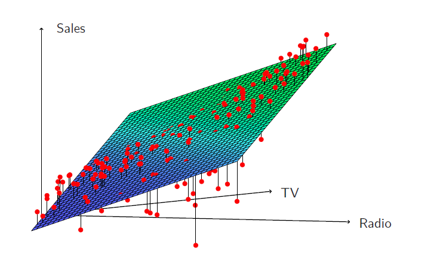
When levels of either TV or radio are low, then the true sales are lower than predicted by the linear model.
But when advertising is split between the two media, then the model tends to underestimate sales.
Model takes the form
\[ \begin{aligned} sales &= \beta_0+\beta_1\times TV+\beta_2 \times radio+\beta_3 (radio\times TV) +\epsilon \\ &= \beta_0+(\beta_1 +\beta_3 \times radio) \times TV +\beta_2 \times radio +\epsilon \end{aligned} \]
library(help = ISLR2)
adv <- read.csv(file = "https://www.statlearning.com/s/Advertising.csv")
fit <- lm(sales~TV+radio+TV:radio, data=adv)
summary(fit)##
## Call:
## lm(formula = sales ~ TV + radio + TV:radio, data = adv)
##
## Residuals:
## Min 1Q Median 3Q Max
## -6.337 -0.403 0.183 0.595 1.525
##
## Coefficients:
## Estimate Std. Error t value Pr(>|t|)
## (Intercept) 6.7502202 0.2478714 27.23 <2e-16 ***
## TV 0.0191011 0.0015041 12.70 <2e-16 ***
## radio 0.0288603 0.0089053 3.24 0.0014 **
## TV:radio 0.0010865 0.0000524 20.73 <2e-16 ***
## ---
## Signif. codes: 0 '***' 0.001 '**' 0.01 '*' 0.05 '.' 0.1 ' ' 1
##
## Residual standard error: 0.944 on 196 degrees of freedom
## Multiple R-squared: 0.968, Adjusted R-squared: 0.967
## F-statistic: 1.96e+03 on 3 and 196 DF, p-value: <2e-16The results in this table suggests that interactions are important.
The \(p\)-value for the interaction term \(TV\times radio\) is extremely low, indicating that there is strong evidence for \(H_A:\beta_3 \ne 0\).
The \(R^2\) for the interaction model is 96.8%, compared to only 89.7% for the model that predicts sales using TV and radio without an interaction term.
This means that (96.8-89.7)/(100-89.7)=69% of the variability in sales that remains after fitting the additive model has been explained by the interaction term.
The coefficient estimates in the table suggest that an increase in TV advertising of $1,000 is associted with increased sales of \((\hat{\beta}_1+\hat{\beta}_3\times radio)\times 1000=19+1.1\times radio\) units.
An increase in radio advertising of $1,000 will be assiciated with an increase in sales of \((\hat{\beta}_2+\hat{\beta}_3\times TV)\times 1000=29+1.1\times TV\) units.
Hierarchy
Sometimes it is the case that an interaction term has a very small \(p\)-value, but the associated main effects (in this case, TV and radio) do not.
The hierarchy principle
- If we include an interaction in a model, we should also include the main effects, even if the \(p\)-values associated with their coefficients are not significant.
The rationale for this principle is that interactions are hard to interpret in a model without main effects - their meaning is changed.
Specifically, the interaction terms also contain main effects, if the model has no main effect terms.
Consider the Credit data set, and suppose that we wish to predict balance using income (quantitative) and student (qualitative)
Without an interaction term, the model takes the form
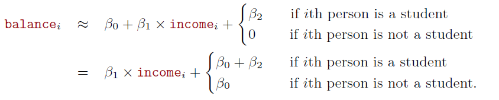
- With interactions, it takes the form
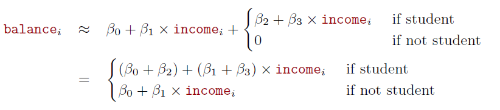
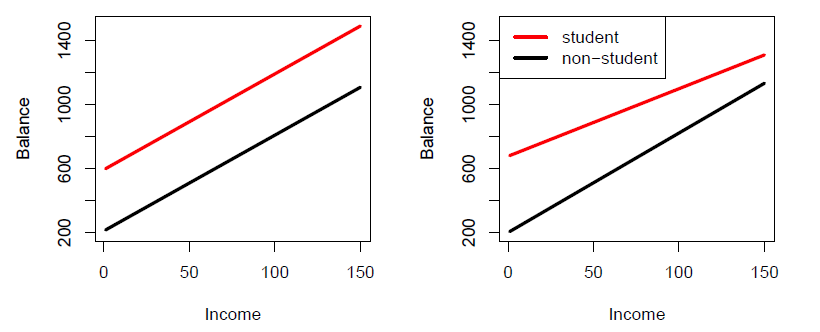
Credit data; left: no interaction between income and student. Right: with an interaction term between income and student.
Polynomial regression on Auto data
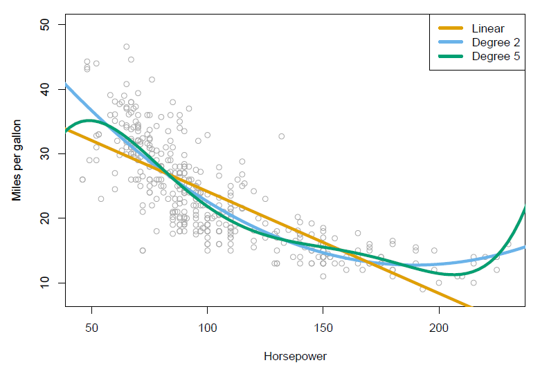
- The figure suggests that
\[ mpg=\beta_0+\beta_1\times horsepower+\beta_2\times horsepower^2+\epsilon \] may provide a better fit.
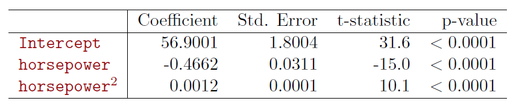
4.3.2 Potential problems
- In fitting a linear regression, many problems may occur.
- Correlation of error terms with explanatory variables
- Non-linearity
- Correlation of error terms
- Heteroskedasticity
- Outliers
- High-leverage points
- Collinearity
- Graphical tools hare often useful in checking the presence of most of these problems (scatter plots of residuals against predicted values and explanatory variables as we have done in some of Advertising examples).
4.4 Non-parametric regressions
Parametric regression assume well defined functional form for \(f(x)\).
Non-parametric approaches do not set assumptions on \(f(x)\).
These methods rely on data and apply different algorithms to find relationships between the dependent and response variable.
One is the \(K\)-nearest neighbor regression (KNN regression), which is closely related to KNN classifier.
Given a value of \(K\) and prediction point \(x_0\) , KNN regression first identifies the \(K\) training observations that are closest to \(x_0\), represented by \(N_0\).
\(f(x_0)\) is estimated by the average of the training responses in \(N_0\) , i.e.,
\[ \hat{f}(x_0) = \frac{1}{K} \sum_{x_i \in N_0}y_i\]
- We will return to this later.